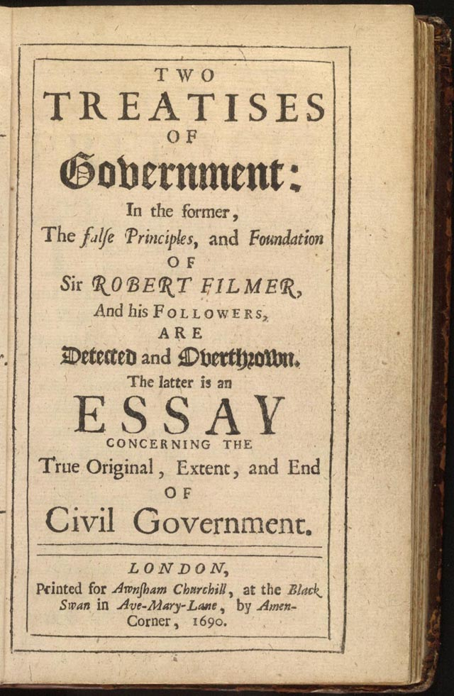

Libres por naturaleza
Locke rechaza la idea de que algunos nazcan para mandar y otros para obedecer. Todos nacemos libres e iguales. Ninguna autoridad natural existe entre los hombres; el poder solo es legítimo si se basa en el consentimiento.
Política y Ciudadanía · Exposición Digital
Filósofo, médico y padre del liberalismo clásico. Sus ideas transformaron la política moderna.
La vida del hombre que desafió el absolutismo y sentó las bases del pensamiento liberal.
John Locke nació el 29 de agosto de 1632 en Wrington, Somerset, Inglaterra, en el seno de una familia puritana. Su padre, abogado y capitán de caballería durante la guerra civil inglesa, inculcó en él los valores de la libertad y la resistencia frente a la tiranía.
Ingresó en la prestigiosa Westminster School y más tarde en Christ Church, Oxford, donde estudió filosofía natural, medicina y ciencias. Allí entró en contacto con las obras de Descartes, Bacon y Boyle, que moldearon su pensamiento empirista.
Su encuentro con Lord Anthony Ashley Cooper (primer conde de Shaftesbury) marcó un antes y un después. Locke se convirtió en su médico personal, secretario y asesor político. A través de él, participó activamente en los debates sobre el gobierno constitucional y los límites del poder real.
Perseguido por sus ideas tras el fracaso de la conspiración whig, Locke se exilió en Holanda entre 1683 y 1688. Allí escribió y perfeccionó sus obras capitales. Tras la Revolución Gloriosa de 1688, regresó a Inglaterra y publicó sus tratados, que se convirtieron en referencia del pensamiento político moderno.
Falleció el 28 de octubre de 1704 en Oates, Essex, rodeado de amigos y discípulos. Su legado intelectual, sin embargo, nunca ha muerto: sus ideas están en la base de las democracias constitucionales, los derechos humanos y el Estado de Derecho.

La Inglaterra del siglo XVII: guerras, revoluciones y el nacimiento de la libertad moderna.
Locke vivió una de las épocas más convulsas de la historia británica. El siglo XVII fue un hervidero de conflictos políticos, religiosos y sociales que moldearon cada fibra de su pensamiento. La lucha entre la monarquía absoluta y el Parlamento, las guerras civiles y las tensiones religiosas entre anglicanos, puritanos y católicos crearon el caldo de cultivo para sus ideas.
La ejecución de Carlos I en 1649, la dictadura de Cromwell, la Restauración de la monarquía en 1660 y finalmente la Revolución Gloriosa de 1688 fueron los hitos que enmarcaron su vida. Locke no fue un espectador pasivo: participó, se exilió y escribió para justificar la resistencia contra la tiranía.
En este contexto, su propuesta de un gobierno limitado basado en el consentimiento de los gobernados no era solo teoría: era una necesidad urgente.
Carlos I vs. el Parlamento. La monarquía absoluta se enfrenta al poder legislativo.
Conflicto políticoThomas Hobbes publica su defensa del absolutismo. Locke responderá defendiendo la libertad individual.
FilosofíaCarlos II regresa del exilio. Se restaura la monarquía con poderes limitados.
PolíticaAcusado de conspiración, huye a Holanda. En el exilio escribe y madura sus ideas.
ExilioGuillermo de Orange destrona a Jacobo II. Se establece la Bill of Rights.
RevoluciónPublica los Dos tratados sobre el gobierno civil y la Carta sobre la tolerancia.
PublicaciónLibres, racionales e iguales por naturaleza. Así entendía Locke al individuo.
Locke rechaza la idea de que algunos nazcan para mandar y otros para obedecer. Todos nacemos libres e iguales. Ninguna autoridad natural existe entre los hombres; el poder solo es legítimo si se basa en el consentimiento.
El ser humano posee razón, la herramienta que le permite conocer la ley natural y distinguir el bien del mal. No necesitamos un soberano absoluto que nos guíe: podemos auto-gobernarnos.
Cada persona posee derechos que no le son concedidos por el Estado: vida, libertad y propiedad. Son anteriores a cualquier sociedad política y el gobierno debe protegerlos.
El estado de naturaleza tiene inconvenientes: falta un juez imparcial. Por eso los individuos deciden asociarse mediante un contrato, creando una sociedad que proteja mejor sus derechos.
Los pilares del pensamiento lockeano: derechos que el Estado no crea, sino que debe proteger.
Para Locke, los derechos naturales son anteriores al Estado. Derivan de la propia naturaleza humana y son universales, inalienables e irrenunciables. El gobierno legítimo no los concede: tiene la obligación sagrada de protegerlos.
El derecho más fundamental. Nadie —individuo, gobierno o mayoría— puede arrebatar la vida de otro arbitrariamente. Cada persona es "propiedad de Dios" y no tiene derecho a destruirse a sí misma ni a los demás.
Libertad para actuar según la propia voluntad, dentro de los límites de la ley natural. La libertad no es libertinaje: termina donde comienza el derecho del otro.
La propiedad es el fruto del trabajo. Lo que una persona extrae de la naturaleza y transforma con su esfuerzo le pertenece. El derecho a la propiedad es sagrado y el gobierno existe para protegerlo.

"El gran y principal fin de la unión de los hombres en comunidades políticas es la preservación de la propiedad. Ningún decreto arbitrario de un superior tiene derecho a disponer de la propiedad del súbdito."
— John Locke, Segundo Tratado sobre el Gobierno Civil
El pacto voluntario que da origen a la sociedad civil y al gobierno legítimo.
Locke imagina un estado de naturaleza donde los seres humanos son libres, iguales y racionales, pero donde la falta de un juez imparcial, de leyes conocidas y de un poder que ejecute la justicia genera inseguridad. Para resolver estos "inconvenientes", los individuos deciden voluntariamente celebrar un pacto: el contrato social.
A diferencia de Hobbes, Locke no cree que el contrato implique la entrega total de la libertad. Los individuos ceden solo el poder de castigar —no sus derechos fundamentales— y establecen un gobierno cuyos poderes están estrictamente limitados.
Libertad e igualdad plenas, pero con inseguridad por la ausencia de una autoridad común que juzgue y castigue.
Acuerdo voluntario y unánime para formar una comunidad política. Cada individuo cede el poder de castigar a cambio de protección.
Autoridad limitada, dividida en poderes, que gobierna con el consentimiento de los gobernados. Si la traiciona, el pueblo tiene derecho a rebelarse.
El gobierno solo es legítimo si cuenta con el consentimiento de los gobernados.
Si el gobierno actúa como tirano, el pueblo tiene el derecho a deponerlo.
El poder está limitado por la ley natural y por los fines para los que fue creado.
El germen del equilibrio político: Locke, precursor de la separación de poderes moderna.
Locke fue el primer filósofo en formular la necesidad de dividir el poder político para evitar la tiranía. Su modelo tripartito sentó las bases que Montesquieu desarrollaría después y que los padres fundadores de Estados Unidos incorporarían a la Constitución de 1787.
Es el poder supremo, pero no absoluto. Crea las leyes y debe gobernar conforme al bien público. Reside en un parlamento representativo.
Aplica y hace cumplir las leyes. Incluye el poder federativo (relaciones internacionales, guerra y paz). Está subordinado al legislativo.
Locke sentó las bases al exigir jueces imparciales y conocidos que resuelvan conflictos según leyes establecidas. Sin jueces independientes, no hay libertad real.
¿Para qué existe el gobierno según Locke? La respuesta que cambió la historia.
Para Locke, el poder político no es un fin en sí mismo. Es un fideicomiso (trust) que el pueblo otorga al gobierno para que cumpla fines específicos. Cuando el gobierno se desvía de esos fines, el pueblo tiene derecho a revocar ese mandato.
El fin principal del gobierno es salvaguardar la vida, la libertad y la propiedad. Estos derechos no los otorga el Estado; el Estado existe para protegerlos.
Sin leyes escritas, conocidas y aplicadas imparcialmente, no hay libertad, sino arbitrariedad.
Proveer jueces independientes que resuelvan conflictos según las leyes. Sin esto, cada persona tendría que hacerse justicia por su mano.
El poder debe ejercerse en beneficio de toda la sociedad, no de intereses particulares. Es un trust que el pueblo puede revocar.
El gobierno debe proteger la libertad de los ciudadanos frente a la opresión, tanto externa como interna.
En casos no previstos por la ley, el ejecutivo puede actuar con prerrogativa, siempre buscando el bien público.
"El poder político no es más que el poder natural que cada hombre tenía en el estado de naturaleza y que cedió a la comunidad para su propia protección."
— John Locke, Segundo Tratado sobre el Gobierno Civil
Más de 300 años después, las ideas de Locke siguen vigentes en nuestras democracias.
El consentimiento de los gobernados es el corazón de la democracia. Cada elección, cada voto, es un recordatorio del contrato social lockeano.
La Declaración Universal de los Derechos Humanos (1948) es lockeana: "Todos los seres humanos nacen libres e iguales en dignidad y derechos".
La división de poderes de Locke está en casi todas las constituciones democráticas. La Constitución de EE.UU. (1787) es el ejemplo más directo.
Locke defendió la tolerancia religiosa y la libertad de conciencia. Su argumento —el Estado no debe forzar las creencias— es la base de la libertad de expresión moderna.
El individuo como unidad básica de la sociedad, con derechos que el Estado debe respetar, es la herencia más profunda de Locke.
El principio de que el poder debe estar limitado por la ley y los derechos individuales es el fundamento del Estado de Derecho.
Una noticia real analizada desde la perspectiva de John Locke.
BUENOS AIRES — El Senado argentino comenzó a debatir el proyecto de ley de Inviolabilidad de la Propiedad Privada, presentado por el Poder Ejecutivo el 27 de marzo. La iniciativa, impulsada por el ministro Federico Sturzenegger, propone reformar el régimen de expropiaciones vigente desde 1977.
Entre los cambios clave, la ley exige que la declaración de utilidad pública sea de interpretación restrictiva y debe identificar "en forma específica y concreta" el fin perseguido. Además, establece que la indemnización se calcule a valor de mercado —no al valor fiscal— e incorpora el lucro cesante como concepto indemnizable.
El proyecto también dispone que el bien expropiado no pase a manos del Estado hasta que se pague íntegramente la indemnización, actualizada por inflación más una tasa de interés comercial. La iniciativa incluye además la aceleración de desalojos por usurpación mediante juicio sumarísimo y modificaciones a la ley de tierras rurales y de manejo del fuego.
Locke consideraba la propiedad un derecho natural anterior al Estado. Esta ley busca reforzar precisamente ese principio: que el Estado no crea el derecho de propiedad, sino que debe reconocerlo y protegerlo como un límite infranqueable al poder político.
Para Locke, la propiedad es el fruto del trabajo. Al exigir indemnización a valor de mercado más lucro cesante, el proyecto reconoce que el valor de un bien no es solo su precio fiscal, sino todo el trabajo y la productividad que incorpora.
Locke fue el primero en formular que el poder debe estar limitado. Exigir que toda expropiación sea "idónea, necesaria y proporcional" es lockeano puro: el gobierno no puede tomar la propiedad de un ciudadano por cualquier motivo ni de cualquier manera.
Que el Estado no pueda tomar posesión del bien sin pagar primero la indemnización refleja la idea lockeana de que el gobierno es un fideicomiso y no un soberano absoluto. El pago previo garantiza que el consentimiento del propietario no sea simplemente atropellado.
Las palabras de Locke que siguen resonando tres siglos después.
"La libertad del hombre bajo un gobierno consiste en tener una regla fija por la cual vivir, común a todos los miembros de esa sociedad."
— Segundo Tratado sobre el Gobierno Civil
"Nadie puede tener derecho a someternos a su poder arbitrario. No hay poder legítimo que no tenga su origen en el consentimiento del pueblo."
— Segundo Tratado sobre el Gobierno Civil
"La tolerancia hacia los que tienen opiniones religiosas diferentes es tan conforme al Evangelio como a la razón humana."
— Carta sobre la Tolerancia
"Dondequiera que el poder se ejerza de manera arbitraria, allí no hay sociedad civil."
— Segundo Tratado sobre el Gobierno Civil
"El entendimiento humano es como un cuarto oscuro que recibe luz a través de las ventanas de los sentidos."
— Ensayo sobre el Entendimiento Humano
Datos fascinantes que pocos conocen sobre la vida y obra de John Locke.
Locke fue un médico hábil. En 1668 drenó un absceso hepático del conde de Shaftesbury usando un tubo de plata que diseñó él mismo.
Pasó cinco años exiliado en Holanda bajo identidad vigilada. Sus obras circulaban en secreto entre círculos liberales ingleses.
Thomas Jefferson tomó frases de Locke para la Declaración de Independencia. "Vida, Libertad y búsqueda de la Felicidad" adapta su "Vida, Libertad y Propiedad".
La mente humana al nacer es una pizarra en blanco. No hay ideas innatas: todo conocimiento proviene de la experiencia sensorial.
En su Carta sobre la Tolerancia (1689), Locke argumentó que el Estado no debe interferir en las creencias religiosas.
La Declaración de los Derechos del Hombre (1789) está claramente influida por su pensamiento sobre derechos naturales y soberanía popular.
Locke permaneció soltero toda su vida. Vivió sus últimos años en Oates, Essex, en casa de sus amigos Sir Francis y Lady Damaris Masham.
Por miedo a represalias, la mayoría de sus obras se publicaron sin su nombre. Solo después de la Revolución Gloriosa reconoció su autoría.
En 1703, Oxford condenó y quemó públicamente algunos de sus escritos. Hoy, Oxford lo honra como uno de sus pensadores más ilustres.
Sus ideas sobre propiedad y trabajo como fuente de valor influyeron en Adam Smith y en los fundamentos del capitalismo moderno.
El legado inmortal de John Locke: por qué su pensamiento sigue siendo esencial hoy.
John Locke fue el arquitecto del mundo moderno. Sus ideas sobre los derechos naturales, el contrato social, la división de poderes y el gobierno limitado se convirtieron en los cimientos de la democracia liberal.
En un mundo donde aún debatimos los límites del poder estatal, la protección de los derechos humanos y el equilibrio entre libertad y seguridad, el pensamiento de Locke sigue siendo sorprendentemente vigente. Cada vez que un ciudadano exige el respeto de sus derechos, cada vez que un tribunal frena un abuso del poder, el espíritu de Locke está presente.
Comprender a Locke es comprender las bases de nuestra civilización. Su pregunta fundamental —¿cómo construir una sociedad justa que respete la dignidad de cada persona?— sigue siendo la pregunta más importante de la política.
En un momento histórico donde la democracia enfrenta nuevos desafíos, volver a Locke no es un ejercicio académico: es una necesidad.
"Dondequiera que el poder se ejerza de manera arbitraria, allí no hay sociedad civil. El fin del gobierno es el bien de la humanidad."
— John Locke, Segundo Tratado sobre el Gobierno Civil